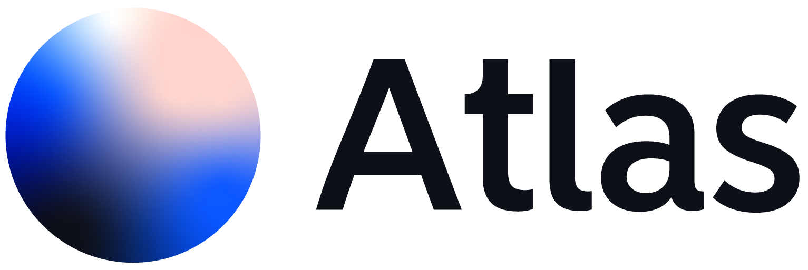
Collaborative Cloud GIS Platform
The modern way to create, analyze, and share geospatial data — together, in real time.
Explore. Analyze. Share.
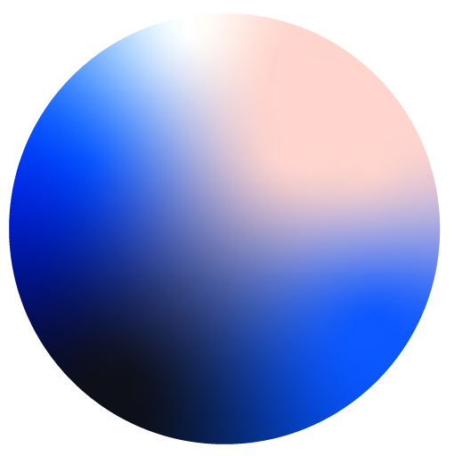
What is Atlas?
Atlas is a cloud-native GIS platform built for teams who need to work with spatial data without the complexity of traditional desktop tools.
- Browser-based — no installs, no licenses, accessible from anywhere
- Real-time collaboration — multiple users editing the same map simultaneously
- Modern experience — intuitive interface designed for both GIS professionals and non-experts
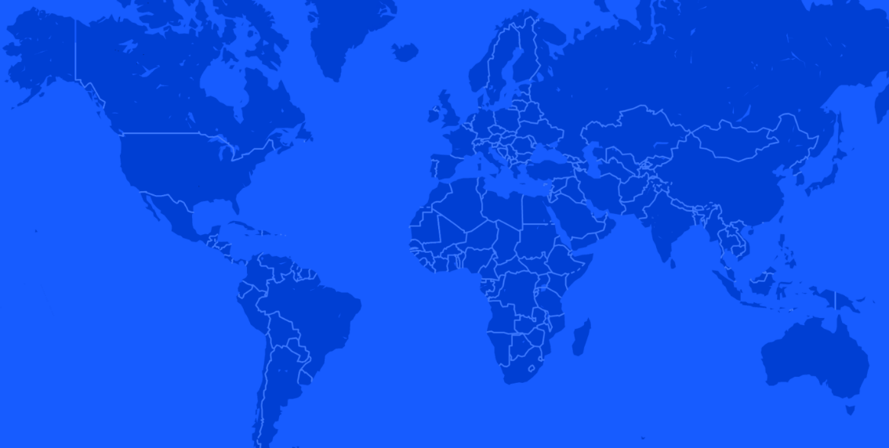
Core Capabilities
Map Creation
Build interactive maps with multiple layers, custom styling, and rich annotations.
Data Layers
Stack and manage vector, raster, and third-party data layers with full control.
Collaboration
Work on the same map in real time. Comment, annotate, and review with your team.
Spatial Analysis
Run spatial queries, buffer analysis, and overlay operations directly in the browser.
Integrations
Connect to WMS, WFS, ArcGIS, and import GeoJSON, Shapefiles, KML, and more.
Embeddable Maps
Share maps publicly or embed interactive maps into websites and applications.
Collaboration & Sharing
Atlas is built for teams. Every map is a shared workspace where people can work together in real time.
- Live cursors — see who's editing and where in real time
- Granular permissions — viewer, editor, and admin roles
- Comments & annotations — discuss features directly on the map
- Public sharing & embedding — share maps with anyone via link or embed
Map Editor
A powerful, intuitive map editor that feels like a modern design tool. Create, style, and edit spatial data with precision.
- Draw and edit features with snap-to geometry
- Advanced styling with visual controls
- Layer management with drag-and-drop
- Real-time preview of changes
- Keyboard shortcuts for power users
- Undo/redo for all operations
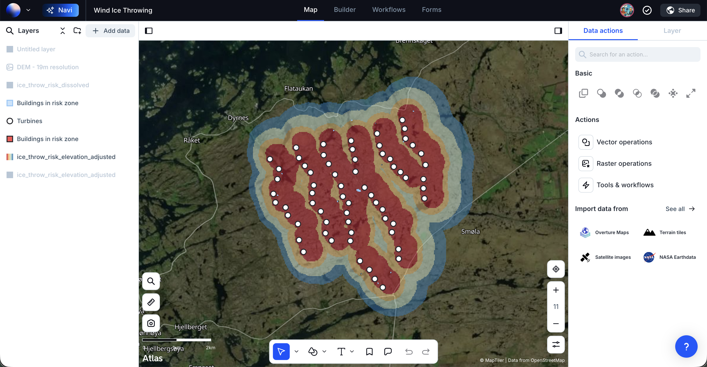
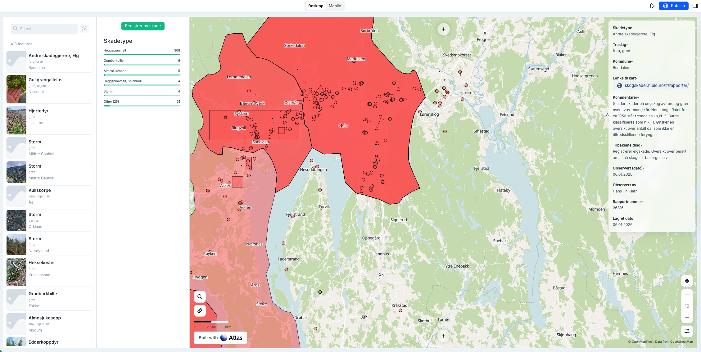
Application Builder
Build custom GIS applications without writing code. Create dashboards, public portals, and data viewers tailored to your needs.
Automated Workflows
Design custom workflows that automate repetitive tasks, trigger notifications, and orchestrate complex processes across your geospatial data.

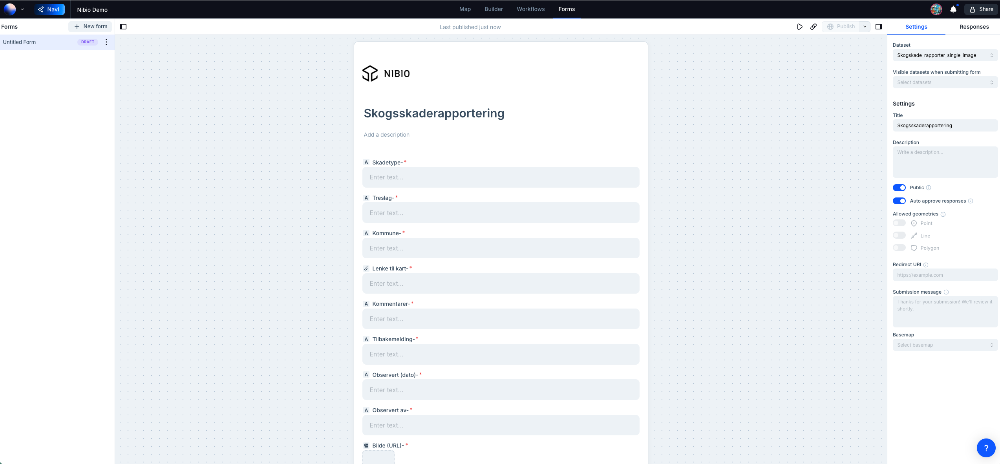
Custom Forms
Create smart forms for structured data collection. Perfect for field surveys, inspections, and citizen reporting.
- Drag-and-drop form builder
- Conditional logic and validation
- Photo and file attachments
- GPS location capture
- Offline support for field work
- Direct integration with map layers
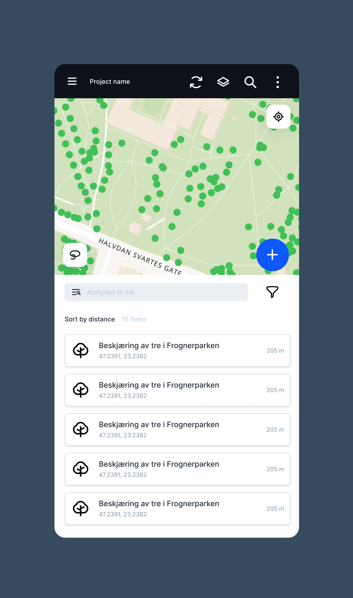
Field App
Take Atlas into the field with our mobile app. Collect data, navigate, and sync seamlessly with your cloud workspace.
Meet Navi — your AI copilot for geospatial data.
Ask questions, get insights, and run analyses using natural language. No GIS expertise required.
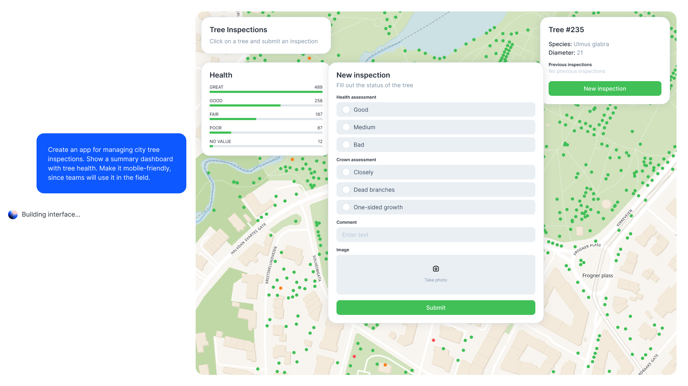
Recreating Skogsskader.no in Atlas
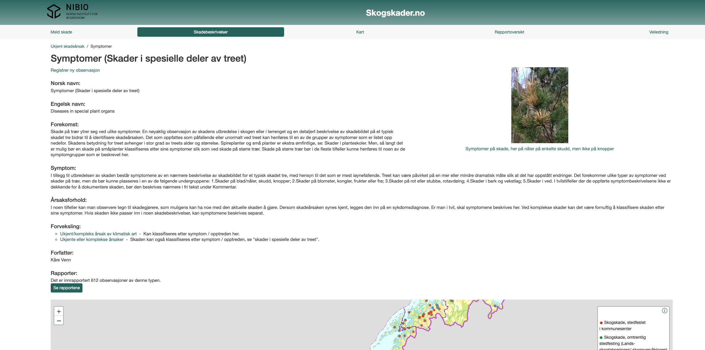
Skogsskader.no
Nibios system for rapportering av skogsskader lar brukere rapportere og spore skoghelsesaker.
Tilpassede skjemaer for datainnsamling
Bygg tilpassede skjemaer for skogsskaderapportering med dra-og-slipp-enkelhet. Definer felt, valideringsregler og arbeidsflyter uten koding.
Feltdatainnsamling
Samle inn skogsskaderapporter direkte i felt ved hjelp av mobile enheter med full frakoblet støtte.
Interaktiv Kartapplikasjon
Overvåk trender, mønstre og hotspots for skogsskader. Diagrammer og kart oppdateres i sanntid når nye rapporter kommer inn.
AI-kategorisering
AI agenten kan utomatisk kategorisere skadetyper fra bilder og beskrivelser, og sikre konsistens på tvers av rapporter.
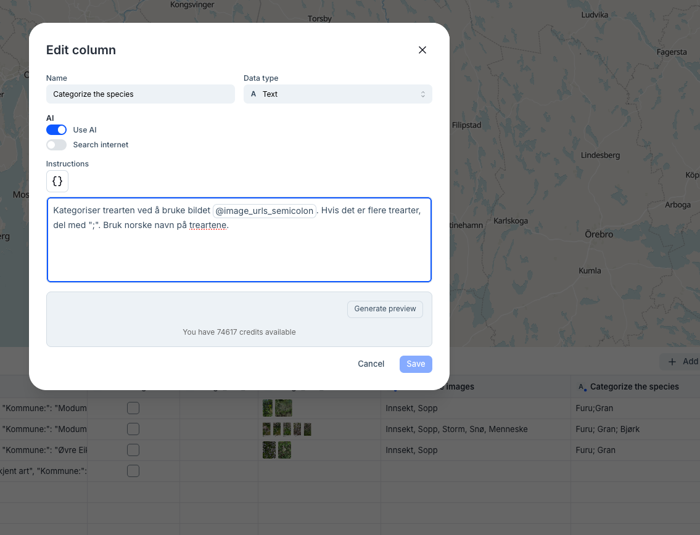
Smart feltassistanse
AI agenten kan også hjelpe feltarbeidere med å fylle ut rapporter ved å foreslå verdier basert på lokasjon, sesong og historiske data.
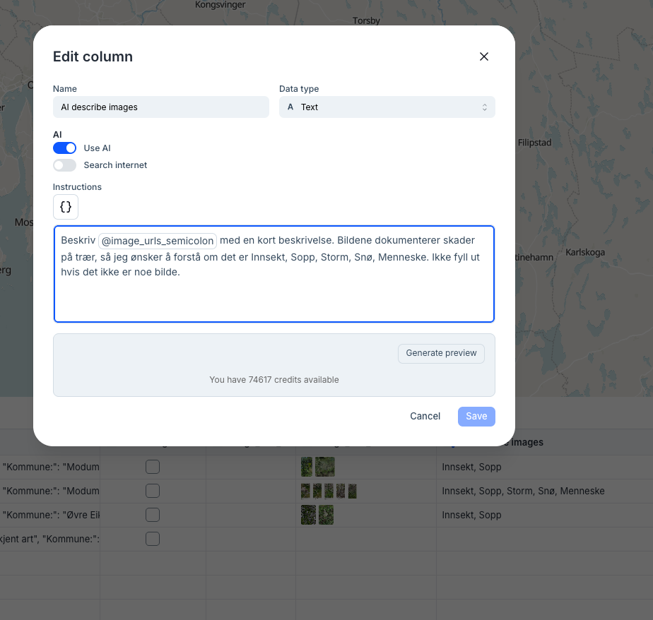